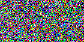

The following demonstration script is also included in the MagickWand for PHP distribution.
The code was highlighted using PHP's built-in highlight_file() function.
The following code produces an image similar to the following:

"Similar", not identical, as the colors of the rounded rectangles are randomized.
<?php
/*
* MagickWand for PHP :: Demonstration program
*
* Author: Ouinnel Watson
* Date: December 2004
*
* WARNING
* By installing and executing this script, you accept any and all
* responsibility for any and all damages of any kind which occur as
* a result of the installation and/or operation of this script, and
* agree to indemnify the author (Ouinnel Watson) against any liability
* and/or responsibility for any and all damages resulting from the
* installation, execution or operation of this script.
*
* Description: The following script demonstrates the inate capabilities of
* MagickWand for PHP by creating an animated GIF.
* MagickWand for PHP capabilities used:
* 1) vector drawing (shapes, text, colors)
* 2) default font
* 3) unique color model
* 4) addition of random noise
* 5) several special effects methods
* 6) setting of single frame display time
* 7) and much more...
*/
/* General Settings */
$noise_frames = 5; /* The amount of frames/images of random noise to be
created at the start of the animation */
$noise_delay = 20; /* The length of time (in hundredth's of a second) that
each noisy frame will be displayed */
$cnt_down_start = 3; /* The starting number of the countdown */
$cnt_down_delay = 50; /* The length of time (in hundredth's of a second) that
each countdown frame will be displayed */
$width = 140; /* The width of each frame in the animation */
$height = 70; /* The height of each frame in the animation */
$x_int = $width / 10; /* The distance, along the x axis, between the edges
of the various rounded rectangles to be drawn */
$y_int = $height / 10; /* The distance, along the y axis, between the edges of
the various rounded rectangles to be drawn */
$x1 = $x_int; /* The x ordinate of the top-left corner of the bounding
rectangle in which the first rounded rectangle will be
drawn */
$y1 = $y_int; /* The y ordinate of the top-left corner of the bounding
rectangle in which the first rounded rectangle will be
drawn */
$x2 = $width - $x_int; /* The x ordinate of the bottom-right corner of the
bounding rectangle in which the first rounded
rectangle will be drawn */
$y2 = $height - $y_int; /* The x ordinate of the bottom-right corner of the
bounding rectangle in which the first rounded
rectangle will be drawn */
$x_radius = $y_radius = 10; /* The radius of the corners of the rounded rectangles to be
drawn */
$font_size = 30; /* The initial text annotation font size in pixels */
$swirl_deg_start = 0; /* The initial degree amount that the last countdown
frame will be swirled */
$swirl_deg_end = 360; /* The maximum degree amount that the last countdown
frame will be swirled */
$swirl_deg_int = 60; /* The swirl loop degree increment value */
$swirl_delay = 10; /* The length of time (in hundredth's of a second) that
each swirled frame will be displayed */
$num_morph_frames = 5; /* The number of intermediary frames between images to
be morphed */
$morph_delay = 20; /* The length of time (in hundredth's of a second) that
each morphed frame will be displayed */
$logo = 'MagickWand for PHP'; /* The 1st string to be displayed */
$welcome_msg = 'The future awaits...'; /* The 2nd string to be displayed */
$mgck_wnd = NewMagickWand(); /* Create a new MagickWand resource -- "holds"
the images */
$bg_color= NewPixelWand(); /* Creates a new PixelWand resource -- contains
information on an individual unit of color;
opaque black by default */
$white = NewPixelWand('white'); /* Does the same as above, except that the
PixelWand's color is set to white */
$pxl_wnd = NewPixelWand();
$drw_wnd = NewDrawingWand(); /* Creates a new DrawingWand resource -- holds
vector drawing commands */
$txt_wnd = NewDrawingWand();
/*
The following loop iterates $noise_frames times, doing the following each
time:
1) Creates a new image using MagickNewImage()
2) Adds MW_LaplacianNoise type random noise to the newly created image
3) Sets the amount of time the image is displayed to $noise_delay
hundredths of a second, using MagickSetImageDelay()
The user function checkWandError() checks the return type of API functions for
explicit FALSE (via the "===" operator), which indicates an error occurred.
*/
for ($i = 0; $i < $noise_frames; $i++) {
checkWandError(MagickNewImage($mgck_wnd, $width, $height, $bg_color), $mgck_wnd, __LINE__);
checkWandError(MagickAddNoiseImage($mgck_wnd, MW_LaplacianNoise), $mgck_wnd, __LINE__);
checkWandError(MagickSetImageDelay($mgck_wnd, $noise_delay), $mgck_wnd, __LINE__);
}
/* Retrieve the current image from $mgck_wnd in a new MagickWand, and assign
it to $pre_morph_wnd.
*/
$pre_morph_wnd =& checkWandError(MagickGetImage($mgck_wnd), $mgck_wnd, __LINE__);
/* Set variables to random values between 0 and 255, for use in an
ImageMagick color string RGB triple (e.g. rgb(255, 255, 255) == white).
*/
$red = mt_rand(0, 255);
$green = mt_rand(0, 255);
$blue = mt_rand(0, 255);
/* Use color values from above to form an ImageMagick color string RGB triple,
and set the $pxl_wnd PixelWand to that color.
*/
checkWandError(PixelSetColor($pxl_wnd, "rgb($red, $green, $blue)"), $pxl_wnd, __LINE__);
/* Set the fill color (the color in which shapes and text will be drawn), to
$pxl_wnd's color.
*/
DrawSetFillColor($drw_wnd, $pxl_wnd);
/* Add a command to draw a rounded rectangle to the $drw_wnd DrawingWand
from point ($x1, $y1), the top-left corner of the bounding rectangle
to ($x2, $y2), (the bottom right corner), with a corner x-axis radius of
$x_radius, and a corner y-axis radius of $y_radius.
*/
DrawRoundRectangle($drw_wnd, $x1, $y1, $x2, $y2, $x_radius, $y_radius);
/* Create a new image, in $pre_morph_wnd, of $width * $height area, with
$bg_color (currently a black PixelWand resource) background color, set
it's display time to $morph_delay, and draw the $drw_wnd DrawingWand on
the new image.
*/
drawNewImageSetDelay($pre_morph_wnd, $drw_wnd, $width, $height, $bg_color, $morph_delay, __LINE__);
/* Morph the images in $pre_morph_wnd, set their displaytime, and and add
them to $mgck_wnd.
*/
addMorphedImages($mgck_wnd, $pre_morph_wnd, $num_morph_frames, $morph_delay, __LINE__);
/* Free the resources associated with $pre_morph_wnd, since it is no longer
needed.
*/
DestroyMagickWand($pre_morph_wnd);
/* Set the current active image, in $mgck_wnd's image squence, to the last image.
*/
MagickSetLastIterator($mgck_wnd);
/* Starting from $i = $cnt_down_start, (with $i being decreased by one at each
iteration's end), and continuing while $i > 0, and the widths and heights of
the rounded rectangles to be drawn are greater than the amounts by which
their sizes are decreased through each iteration,
*/
for ($i = $cnt_down_start; $i > 0 && ($x2 - $x1) >= $x_int && ($y2 - $y1) >= $y_int; $i--) {
/* Set the PixelWand $pxl_wnd's color to that of the ImageMagick color
string RGB triple "rgb($red, $green, $blue)", where $red, $green, and
$blue are numbers between 0 and 255, inclusive.
*/
checkWandError(PixelSetColor($pxl_wnd, "rgb($red, $green, $blue)"), $pxl_wnd, __LINE__);
/* Add commands to draw a $pxl_wnd colored rounded rectangle to $drw_wnd */
DrawSetFillColor($drw_wnd, $pxl_wnd);
DrawRoundRectangle($drw_wnd, $x1, $y1, $x2, $y2, $x_radius, $y_radius);
$red = mt_rand(0, 255);
$green = mt_rand(0, 255);
$blue = mt_rand(0, 255);
/* Decrease the size of the next rounded rectange to be drawn */
$x1 += $x_int;
$y1 += $y_int;
$x2 -= $x_int;
$y2 -= $y_int;
/* Create a new image in $mgck_wnd, and draw $drw_wnd on it */
drawNewImageSetDelay($mgck_wnd, $drw_wnd, $width, $height, $bg_color, $cnt_down_delay, __LINE__);
/* Add commands to draw $i in $white colored text $font_size, horizontally
and vertically centered at relative point (0, 0), (see function
definition for details), to the $txt_wnd DrawingWand.
*/
addText($txt_wnd, $white, $font_size, $i);
/* Draw $txt_wnd on the just created image in the $mgck_wnd MagickWand */
checkWandError(MagickDrawImage($mgck_wnd, $txt_wnd), $mgck_wnd, __LINE__);
/* Clear the $txt_wnd DrawingWand of any accumulated commands, and reset the
settings it contains to their defaults.
*/
ClearDrawingWand($txt_wnd);
}
/* Add commands to draw $i, (which now holds a value that is 1 less than the
last $i value drwan in the loop above), in $white at $font_size, to the
$drw_wnd DrawingWand
*/
addText($drw_wnd, $white, $font_size, $i);
/* Draw $drw_wnd on a new image in $mgck_wnd */
drawNewImageSetDelay($mgck_wnd, $drw_wnd, $width, $height, $bg_color, $swirl_delay, __LINE__);
/* The following loop creates a set of images which, when set as animation
frames, creates a sort of hurricane effect.
Starting at $swirl_deg = $swirl_deg_start degrees, and increasing
$swirl_deg by $swirl_deg_int degrees as long as $swirl_deg is less than or
equal to $swirl_deg_end, ...
*/
for ($swirl_deg = $swirl_deg_start; $swirl_deg <= $swirl_deg_end; $swirl_deg += $swirl_deg_int) {
/* create a new image, draw $drw_wnd on it, set its display time to
$swirl_delay hundredths of a second, ...
*/
drawNewImageSetDelay($mgck_wnd, $drw_wnd, $width, $height, $bg_color, $swirl_delay, __LINE__);
/* and perform the swirl special effect on it at $swirl_deg. */
checkWandError(MagickSwirlImage($mgck_wnd, $swirl_deg), $mgck_wnd, __LINE__);
}
/* Following loop ensures that $font_size is */
while (TRUE) {
/* Set the text font size used by $txt_wnd to $font_size */
DrawSetFontSize($txt_wnd, $font_size);
/* MagickGetStringWidth() returns the width of the specified strings
($logo and $welcome_msg), when they are drawn with the settings (font,
font size, stroke, etc.) of the specified DrawingWand, $txt_wnd.
*/
$logo_width =& checkWandError(MagickGetStringWidth($mgck_wnd, $txt_wnd, $logo), $mgck_wnd, __LINE__);
$welcome_msg_width =& checkWandError(MagickGetStringWidth($mgck_wnd, $txt_wnd, $welcome_msg), $mgck_wnd, __LINE__);
/* If the widths of both strings are within the acceptable limits, end
the loop.
*/
if ($logo_width < $width && $welcome_msg_width < $width) {
break;
}
/* Otherwise, decrement the $font_size */
$font_size--;
}
/* Retrieve the current image from $mgck_wnd in a new MagickWand, and assign
it to $pre_morph_wnd.
*/
$pre_morph_wnd =& checkWandError(MagickGetImage($mgck_wnd), $mgck_wnd, __LINE__);
/* Add commands to the $txt_wnd DrawingWand to draw the $logo string in $white
at $font_size, then draw $txt_wnd on a new image in $pre_morph_wnd.
*/
addText($txt_wnd, $white, $font_size, $logo);
drawNewImage($pre_morph_wnd, $txt_wnd, $width, $height, $bg_color, __LINE__);
/* Clear $txt_wnd's command list and reset its settings */
ClearDrawingWand($txt_wnd);
/* Draw $welcome_msg in $white at $font_size on another new image in
$pre_morph_wnd.
*/
addText($txt_wnd, $white, $font_size, $welcome_msg);
drawNewImage($pre_morph_wnd, $txt_wnd, $width, $height, $bg_color, __LINE__);
/* Add the first image in $mgck_wnd to $pre_morph_wnd. */
MagickSetFirstIterator($mgck_wnd);
checkWandError(MagickAddImage($pre_morph_wnd, $mgck_wnd), $pre_morph_wnd, __LINE__);
/* Morph the images in $pre_morph_wnd and add them to the end of $mgck_wnd's
image sequence.
*/
addMorphedImages($mgck_wnd, $pre_morph_wnd, $num_morph_frames, $morph_delay, __LINE__);
/* Free the resources associated with $pre_morph_wnd, $drw_wnd and $txt_wnd,
since they are no longer needed.
*/
DestroymagickWand($pre_morph_wnd);
DestroyDrawingWand($drw_wnd);
DestroyDrawingWand($txt_wnd);
/* Sets the output format of $mgck_wnd's image sequence to GIF */
checkWandError(MagickSetFormat($mgck_wnd, 'GIF'), $mgck_wnd, __LINE__);
/* Retrieves the mime-type associated with $mgck_wnd's image sequence, and
outputs it in a Content-Type header.
*/
header('Content-Type: ' . MagickGetMimeType($mgck_wnd));
/* Outputs $mgck_wnd's image sequence as a BLOB (Binary Large Object) */
MagickEchoImagesBlob($mgck_wnd);
/* Free the resources associated with $mgck_wnd */
DestroymagickWand($mgck_wnd);
/* ******************** Function Declarations ******************** */
/**
* Function checkWandError() compares the value of $result, which should be
* the result of any MagickWand API function, to explicit FALSE, and if it is
* FALSE, checks if $wand for contains an error condition (in case the API
* function is just returning FALSE as a normal return value).
*
* If the return value is FALSE, and the $wand contains a set error condition,
* the function outputs the error and forcibly ends the program.
*
* If not, returns $result as a reference.
*
* @param mixed MagickWand API function result
* @param resource Any MagickWand API resource
* @param int Always __LINE__ (script current line number predefined
* PHP constant)
*
* @return reference Returns reference to 1st argument (if no errors found)
*/
function &checkWandError(&$result, $wand, $line) {
if ($result === FALSE && WandHasException($wand)) {
echo '<pre>An error occurred on line ', $line, ': ', WandGetExceptionString($wand), '</pre>';
exit();
}
return $result;
}
/**
* Function addText() performs several operations on the DrawingWand
* $drw_wnd:
* 1) sets the fill color (the color in which shapes, text, etc. will be
* drawn) from the PixelWand (or Imagemagick color string) $pxl_wnd with
* DrawSetFillColor()
* 2) sets the font size of text to be drawn to $font_size, using
* DrawSetFontSize()
* 3) sets the position where text will be drawn with DrawSetGravity();
* position is set to MW_CenterGravity by default, which automatically
* centers text horizontally and vertically
* 4) sets text to be drawn later to $text, which will be drawn at
* coordinate ($x, $y), (relative to the position indicated by
* $gravity), with DrawAnnotation()
*
* If no font is set prior to this function being called, the MagickWand API
* uses the default font (seems to be Arial).
*
* @param resource DrawingWand resource
* @param mixed PixelWand resource or imagemagick color string
* @param float desired text font size
* @param float string to be drawn
* @param int the desired text gravity, indicating the desired text
* position; must be a MagickWand API GravityType
* @param int x ordinate, relative to the chosen text gravity where
* text will be drawn
* @param int y ordinate, relative to the chosen text gravity where
* text will be drawn
*
* @return void No return value, as all functions used return void.
*/
function addText($drw_wnd, $pxl_wnd, $font_size, $text, $gravity = MW_CenterGravity, $x = 0, $y = 0) {
/* Set the color used to draw shapes and text with $drw_wnd to $pxl_wnd's
color
*/
DrawSetFillColor($drw_wnd, $pxl_wnd);
/* Set the text font size used by $drw_wnd to $font_size */
DrawSetFontSize($drw_wnd, $font_size);
/* Set $drw_wnd text gravity (automatic text positioning setting), to
$gravity
*/
DrawSetGravity($drw_wnd, $gravity);
/* Add a command to the $drw_wnd DrawingWand to draw the $text string at
point ($x, $y) (relative to $drw_wnd's gravity setting).
*/
DrawAnnotation($drw_wnd, $x, $y, $text);
}
/**
* Function drawNewImage() creates a new image, using MagickNewImage(), of
* $width * $height area, filled with $bg_color (a PixelWand, or ImageMagick
* color string) color.
*
* It then uses MagickDrawImage() to draw the commands contained in the
* DrawingWand $drw_wnd on the newly reated image.
*
* @param resource MagickWand resource
* @param resource DrawingWand resource
* @param int width of new image
* @param int height of new image
* @param mixed PixelWand resource or imagemagick color string
* @param int Always __LINE__ (script current line number predefined
* PHP constant)
*
* @return void
*/
function drawNewImage($mgck_wnd, $drw_wnd, $width, $height, $bg_color, $line) {
$line = 'program line '.$line.', function line ';
checkWandError(MagickNewImage($mgck_wnd, $width, $height, $bg_color), $mgck_wnd, $line.__LINE__);
checkWandError(MagickDrawImage($mgck_wnd, $drw_wnd), $mgck_wnd, $line.__LINE__);
}
/**
* Function drawNewImageSetDelay() calls drawNewImage() to create a new
* image, of $width * $height area, filled with $bg_color color, drawn on by
* DrawingWand $drw_wnd.
*
* It then sets the length of time the new image will be displayed to $delay.
*
* @param resource MagickWand resource
* @param resource DrawingWand resource
* @param int width of new image
* @param int height of new image
* @param mixed PixelWand resource or imagemagick color string
* @param int desired length of time (in hundredths of a second) that
* the new image will be displayed
* @param int Always __LINE__ (script current line number predefined
* PHP constant)
*
* @return void
*/
function drawNewImageSetDelay($mgck_wnd, $drw_wnd, $width, $height, $bg_color, $delay, $line) {
drawNewImage($mgck_wnd, $drw_wnd, $width, $height, $bg_color, $line);
$line = 'program line '.$line.', function line ';
checkWandError(MagickSetImageDelay($mgck_wnd, $delay), $mgck_wnd, $line.__LINE__);
}
/**
* Function addMorphedImages() morphs the images in $pre_morph_wnd, with
* $num_morph_frames intermediary frames. The new sequence's images are then
* set to display for $morph_delay 100th's of a second, and then added to the
* end of $mgck_wnd's image list.
*
* @param resource MagickWand resource
* @param resource MagickWand resource
* @param int number of intermediary frames desired between the images
* to be morphed
* @param int desired length of time (in hundredths of a second) that
* each frame in the newly morphed sequence will be
* displayed
* @param int Always __LINE__ (script current line number predefined
* PHP constant)
*
* @return void
*/
function addMorphedImages($mgck_wnd, $pre_morph_wnd, $num_morph_frames, $morph_delay, $line) {
$line = 'program line '.$line.', function line ';
/* Set the current active image in the $mgck_wnd MagickWand to the first
image in its image list
*/
MagickSetFirstIterator($pre_morph_wnd);
/* Perform the morph special effect on $pre_morph_wnd and assign the result
to $morph_wnd
*/
$morph_wnd =& checkWandError(MagickMorphImages($pre_morph_wnd, $num_morph_frames), $pre_morph_wnd, $line.__LINE__);
/* Set the current active image in the $morph_wnd MagickWand to the first
image in its image list and remove it.
*/
MagickSetFirstIterator($morph_wnd);
checkWandError(MagickRemoveImage($morph_wnd), $morph_wnd, $line.__LINE__);
/* Set the current active image in the $morph_wnd MagickWand to the last
image in its image list and remove it.
*/
MagickSetLastIterator($morph_wnd);
checkWandError(MagickRemoveImage($morph_wnd), $morph_wnd, $line.__LINE__);
/* Reset $morph_wnd's image list iterator; this has the effect that the
next call to MagickNextImage($morph_wnd) sets $morph_wnd's current
active image index to 0, i.e., to the first image.
Contrast this behavior to MagickSetFirstIterator()'s, which sets the
current active image's index to 0, causing the next call to
MagickNextImage() to actually set the image index to 1, i.e., the
second image in the MagickWand in question.
This is an important distinction -- be careful.
*/
MagickResetIterator($morph_wnd);
while (MagickNextImage($morph_wnd)) {
/*
Set the length of time the current active image is displayed to
$morph_delay hundredths of a second.
*/
checkWandError(MagickSetImageDelay($morph_wnd, $morph_delay), $morph_wnd, $line.__LINE__);
}
MagickSetLastIterator($morph_wnd);
/* Add the images in $morph_wnd to the end of $mgck_wnd */
MagickSetLastIterator($mgck_wnd);
checkWandError(MagickAddImages($mgck_wnd, $morph_wnd), $mgck_wnd, $line.__LINE__);
DestroymagickWand($morph_wnd);
}
?>